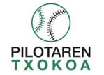
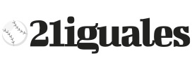

LARRAUN PILOTA ELKARTEA
Larraungo pilota elkartea · Lekunberri (Nafarroa)
Club de pelota del valle de Larraún · Lekunberri (Navarra)
Larraungo pilota elkartea · Lekunberri (Nafarroa)
Club de pelota del valle de Larraún · Lekunberri (Navarra)
Larraun Pilota Elkartea es mucho más que un club deportivo. Es un punto de encuentro para los pueblos del valle de Larraún, un espacio donde se transmite de generación en generación la pasión por la pelota vasca, uno de los deportes más arraigados a nuestra cultura y a nuestra forma de vivir.
En nuestros frontones, la pelota ha sido siempre un lugar de convivencia, esfuerzo y respeto, donde niños, jóvenes y adultos han compartido entrenamientos, partidos y vivencias que forman parte de la historia de nuestros pueblos. La pelota no es solo competición: es educación, compañerismo y vínculo entre localidades.
Desde Lekunberri y el conjunto de las localidades del valle, trabajamos para fomentar la práctica de la pelota vasca, cuidar la cantera y mantener vivo un deporte que forma parte de nuestra identidad, adaptándolo a los nuevos tiempos sin perder sus valores tradicionales.
Larraun Pilota Elkartea kirol elkarte bat baino askoz gehiago da. Larraungo herriak lotzen dituen topagunea da, belaunaldiz belaunaldi euskal pilotarekiko zaletasuna transmititzen den lekua, gure kulturaren eta bizimoduaren parte garrantzitsua den kirola izanik.
Gure frontoietan, pilota betidanik izan da elkarbizitzarako, ahaleginerako eta errespeturako gunea, non haurrek, gazteek eta helduek entrenamenduak, partidak eta bizipenak partekatu dituzten, gure herrien historiaren parte bihurtuz. Pilota ez da lehia bakarrik: hezkuntza, laguntasuna eta herrien arteko lotura ere bada.
Lekunberritik eta haraneko gainerako herrietatik, euskal pilotaren praktika sustatzeko lan egiten dugu, harrobia zainduz eta gure nortasunaren parte den kirol hau bizirik mantenduz, balio tradizionalak galdu gabe garai berrietara egokituz.

Larraun obtiene su sexta txapela en el Interpueblos de Nafarroa.
Larraunek bere seigarren txapela lortzen du Nafarroako Herrien Arteko Txapelketan.
¡Enhorabuena a la persona ganadora!
Muchísimas gracias a todas y todos por participar en nuestro sorteo de Navidad,
por la ilusión compartida y por acompañarnos un año más.
✨ ¡Feliz Navidad y suerte para el próximo año! 🎁🎄
Zorionak irabazleari!
Eskerrik asko guztioi Gabonetako zozketan parte hartzeagatik,
ilusio partekatuagatik eta beste urte batez gurekin egoteagatik.
✨ Gabon zoriontsuak eta zorte on datorren urterako! 🎁🎄
El 27 de diciembre a las 10 horas organizaremos partidos amistosos de pelota mano y pala. Por favor escribid al móvil de contacto quienes queráis jugar, antes del lunes, para organizar los partidos. Con los nuevos también contamos si quieren.
Abenduaren 27an 10etanesku pilota eta palako pilota partidu amistosoak antolatuko ditugu. Mesedez idatzi kontaktuko mugikorrara jokatu nahi duzuenok, astelehena baino lehen, partiduak antolatzeko. Hasiberriekin ere kontatzen dugu nahi badute.

El próximo 24/12/2025 se realizará el
sorteo de la Cesta de Navidad alrededor de las
20:00 horas en el frontón.
Los resultados se publicarán en esta web y en el
Facebook oficial del club
.
Datorren 2025/12/24an,
Gabonetako Saskiaren zozketa egingo da
20:00ak aldera, frontoian.
Emaitzak webgune honetan eta
klubaren Facebook ofizialean
argitaratuko dira.
La pelota vasca es uno de los deportes más emblemáticos de nuestra cultura, un juego que ha sabido mantenerse vivo a lo largo de los siglos combinando tradición, esfuerzo físico y valores comunitarios.
Entre sus diferentes modalidades, la pelota a mano y la pala ocupan un lugar destacado por su accesibilidad y espectacularidad. La mano exige técnica, resistencia y lectura del juego, mientras que la pala aporta velocidad y dinamismo.
Practicar pelota vasca es mejorar la condición física, compartir valores y formar parte de una tradición viva que sigue creciendo gracias a los clubes.
Euskal pilota gure kulturaren kirol adierazpen nagusietako bat da, tradizioa, ahalegina eta balio sozialak uztartzen dituena.
Eskuzko pilota eta pala modalitate eskuragarriak eta ikusgarriak dira, teknika, indarra eta jokoaren ulermena lantzen dituztenak.
Euskal pilota praktikatzea kirola egitea baino gehiago da: elkarbizitza, balioak eta bizirik dagoen tradizio baten parte izatea.
Kategoriak: Aurrebenjaminak, Sein eta Kimu
Categorías: Prebenjamín, Benjamín y Alevín
Kategoriak: Haur, Kadete eta Gazte
Categorías: Infantil, Cadete y Juvenil
Kategoriak: Helduak
Categorías: Senior
ℹ️ Karteldegi hau automatikoki sortu eta eguneratzen da Nafarroako Pilota Federazioaren webgunean argitaratutako informaziotik eta torneo ezberdinen erakunde antolatzaileek emandako datuetatik.
ℹ️ Esta cartelera se genera y actualiza automáticamente a partir de la información publicada en la web de la Federación Navarra de Pelota, así como de los datos facilitados por las entidades organizadoras de los distintos torneos.
ℹ️ Txapelketa babestuei buruzko informazio osoa hemen dago eskuragarri: 🏆 Txapelketak
ℹ️ La información completa sobre los campeonatos patrocinados está disponible en: 🏆 Campeonatos
Torneo ofizialetako emaitza osoak eta sailkapen eguneratuak Nafarroako Pilota Federazioaren webgunean kontsulta daitezke.
Los resultados completos de los torneos oficiales, así como sus clasificaciones actualizadas, pueden consultarse en la web de la Federación Navarra de Pelota.
➜ Emaitzak (Euskera) | ➜ Resultados (Castellano)
Gainerako emaitzak ezagutzeko, torneo bakoitzeko kanal ofizialetara jo beharko da. Intereseko gune batzuk:
Para conocer el resto de resultados se deberá acudir a los canales oficiales de cada torneo. Algunos sitios de interés:
 ℹ️ Txapelketa babestuei buruzko informazio osoa hemen dago eskuragarri: 🏆 Txapelketak
ℹ️ La información completa sobre los campeonatos patrocinados está disponible en: 🏆 Campeonatos
Las fotografías y carteles mostrados en esta galería están disponibles en formato ampliado en el Facebook oficial del club , donde se publican semanalmente las actividades, partidos y eventos. También disponemos de cuenta en Instagram .
Galeria honetan agertzen diren argazkiak eta kartelak tamaina handian ikus daitezke klubaren Facebook ofizialean , bertan astero jarduerak, partidak eta ekitaldiak argitaratzen direlarik. Instagram kontu bat ere badugu


📍 Lekunberri
📱 613 99 77 10 Astean zehar, 16etatik 20etara
📱 613 99 77 10 Entre semana, de 16:00 a 20:00 horas
✉️ larraunpe@gmail.com